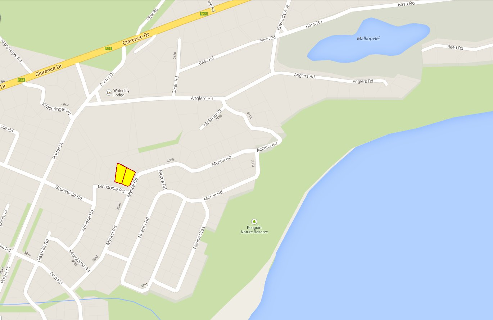
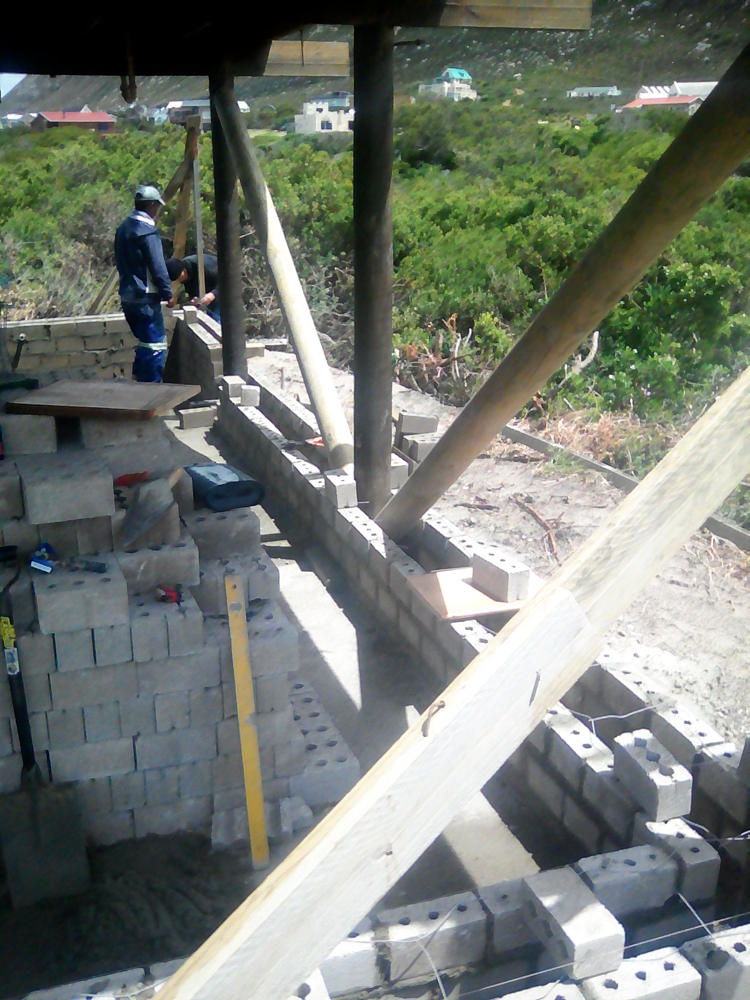

Being born and raised in Zimbabwe, I've always had an appreciation for nature and outdoor living. In the early eighties I moved with my parents to Pretoria as a teenager where I attended high school. In the early nineties I went to study computer science at the University of Cape Town and after a brief stint in Pretoria I moved back to Cape Town in 1995.
I loved Cape Town - I felt free and independent there - so when I moved back there I set out to buy my own piece of land to build my dream house somewhere nearby, like Noordhoek or Scarborough. However, property prices were being driven up by demand from international buyers at the time, resulting in the start of a property bubble that was to grow for another decade. So I started looking further afield... even as far as Cape Agulhas.
I remember spending a weekend with the UCT Mountain and Ski club in the village of Betty's Bay, swimmimg in the lake, playing on the beach and hiking in the mountains behind the Harold Porter Botanic Gardens. So I started looking at properties in the area, and soon found one that I liked near the main beach. I put in an offer at the asking price (not being one to haggle), but the seller suddenly decided that he wanted twice as much! So I let it go.
A few weeks later I found another plot nearby - mostly covered by an almost impenetrable overgrowth of alien vegetation. I went to take a look, bashing my way through the tangle of branches, and discovered that the plot had an interesting topographic: initially dipping down below the level of the road, and then rising to the top of a small, well established vegetated dune which elevated the site above most of the surrounding area, providing a panoramic view of the mountains and sea.
So, in 1997 I decided to buy plot 3654 in Monsonia Road, Betty's Bay - a short stroll from the main beach, Malkopsvlei (Bass Lake) and the nearby shops, restaurants and garage. In 1999 I had a small solid log cottage built, and when the adjacent plot 3655 came onto the market in 2001 I decided to buy it lest someone else snap it up from under my nose and build a large double-storey house that would spoil my view.
Soon after buying plot 3654 I contacted a professional land surveyor, Mr. Chris Case from Pringle Bay, to identify the boundary markers and draw up a topographical map of the plot.
|  |
I live in Ireland currently, from where I often dream of living a sustainable lifestyle close to nature between mountain and sea one day. To turn my dream into reality I decided to hold on to my property in Betty's Bay and gradually develop the cottage as well as establish an indigenous garden. The garden is getting along fine, being left almost entirely to flourish under natural conditions, and the cottage has withstood the elements for more than 20 years so far.
When I start living there permanently one day I plan to install solar panels and a wind turbine to generate my own electricity, and to start a veggie garden and keep poultry in order to live as self-sufficiently as possible. Maybe I'll turn my cottage into a backpackers lodge to serve as a springboard for travellers to relax, explore the area and enjoy some of the local activities.
Some wildlife occurs on the property itself, such as the local population of Cape Francolin. I have spotted reptiles such as snakes and tortoises on my property, and various small mammals such as: Cape Grey Mongoose, Cape Porcupine and even the occasional shy Cape Grysbok comes into my garden to chew the young leaves off my milkwood trees.
In the surrounding mountains there are Cape Leopard, Caracal (rooikat), Rock Hyrax (dassie) and Cape (Chacma) Baboon, some of which occasionally wander into the village to raid rubbish bins, homes and shops.
The beaches and rocky coast host a colony of African penguin, breeding pairs of the endangered African Oystercatcher as well as the rare Cape Clawless Otter.
|
Located on the Whale Route you can spot the Southern Right Whale, Dolphins, Cape Fur Seals, while the infamous Great White Shark lurk in the waters.
The fruits of the wild olive, milkwood trees and other shrubs attract birds and other small wildlife. I aim to establish a 100% indigenous garden that will provide a habitat for such wildlife.
So, after buying the property I spent many weekends erradicating the alien rooikrans trees while preserving the indigenous vegetation. I had the municipal water supply connected so that I could water my young trees as I started planting them. I also had truckloads of gardening soil delivered to enrich the soil for the newly planted young trees. Some of the rooikrans branches have been buried beneath the soil so that time and nature can do the job of making compost.
When I started planting indigenous trees I initially experimented with various species such as Milkwood, Cape Beech and Yellowwood, but in the end it was only the Milkwood trees that have endured, and to date I have planted more than a hundred of them on my property. Milkwood trees grow very slowly - especially in the windy conditions of Betty's Bay - but they are making steady progress (some are up to two metres tall now) and one day I hope to have my own private milkwood forest :)
One of my tenants carved out a cosy little garden on top of the dune under the indigenous vegetation next to the largest milkwood tree where I planted some indigenous clivias.
 |
The cottage, built from solid logs supplied by N.S.T. in Knysna, was completed in August 1999. It was built on the elevated portion of the plot where it stands on poles to avail of the surrounding views.
There are diagonal cross-braces between the poles to stabilize the structure in the strong prevailing winds that are typical of Betty's Bay.
In 2001 I had extra concrete blocks cast around each pole, above the existing concrete footings in order to provide additional stability. These blocks were not placed directly on top of the footings - there is a gap between the footings and the blocks so that any water that might run down the poles and penetrate through the blocks can still drain away.
I planted buffalo grass beneath the cottage to prevent the sand from blowing away in the strong wind. But since grass doesn't grow well in the shade I covered the sand under the cottage with green shade netting as well to add further protection against wind erosion.
However, in spite of my efforts, the constant winds gradually eroded the sand from under the cottage, and when I visited Betty's Bay in 2008 I realized that I needed to take immediate action to prevent further wind erosion.

My tenant found a builder who could do the job of re-filling the hole with sand and laying a concrete floor. The builder suggested that he do a proper job from the start by laying a reinforced concrete foundation so that I can build walls in future. It made sense to me as it meant that I would never need to disturb the sand around the foundations again. So I agreed that he go ahead and do the full job as soon as possible.
Then they proceeded to dig trenches for foundations 600mm wide and 350mm deep.
The foundations were built to 25MPA strength as per NHBRC specification using concrete reinforced with Y16 steel bars.
 |
The entire floor area was covered with waterproofing plastic and a grid of steel reinforcement.
 |
And then the floor was covered with a layer of concrete and kept wet for a few weeks to prevent it from drying out too quickly and cracking.
The work was completed in May 2008 and it has been a success as it has put a complete halt to all wind erosion under the cottage.
To confirm the structural integrity I contacted a professional structural engineer, Dieter Pause from Kleinmond, to inspect the foundations in 2011. He probed the soil to confirm that the dune is stabilised and suitable for building on, and he dug around various sections of the foundations to determine that they are suitable to carry the weight of the existing cottage plus the walls that I intend to build for the downstairs extension.
Local draughtsman Mike de Jager drew up the plans for me and submitted them to the municipality for approval:
First I had a concrete slab built for the future carport, with a concrete footpath leading up the dune to the cottage so that building materials could be transported more easily.
Work commenced on the pipework, foundation and floor for the new wet room.
Before removing all the structural rafters, the builder put in some new round poles for structural support that would fit in the wall cavities.
Construction of the double walls then started, building them on top of the fondations that had been laid in 2008. Ties were placed between the walls to tie them together across the wall cavities. The weight-bearing poles along the perimeter being embedded in the cavity between the walls would result in thick walls, allowing for deep window sills eventually.
|  |
The walls were built up to a height of 1.3 metres, approximately waist height and then the cavities were filled with concrete.
The walls were then built up to full height, embedding the rafters from the first floor.
Wooden window and door frames were added next.
The walls were plastered, then the window and door frames were oiled and varnished.
 |
The white sanitaryware was installed in the wet room, along with the corrugated roof and glass brick windows.
Electric wiring was installed next.
The interior walls were given an undercoat, floors were polished and a kitchen sink was installed.
A hole was cut into the wooden first floor and steps built, linking the existing cottage interior with the new ground floor extension.
The final ground floor interior with furniture.
It wasn't long after completing the extension that the existing septic tank started getting overwhelmed with the additional usage, so the next task was to build a new septic tank, which we decided to build alongside the proposed carport.
The last part of the building extension was the deck.
 |
My next plans for 2021, for which I am currently seeking municipal approval, are to build a single lock-up garage with an attached pergola (instead of the originally proposed carport), as well as a storeroom to replace the wooden wendyhouse.